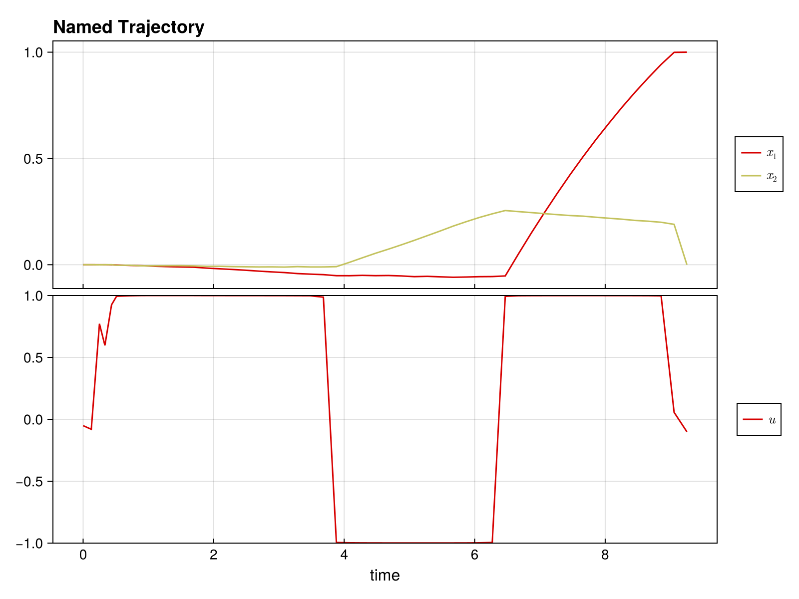

Quickstart Guide
Welcome to DirectTrajOpt.jl! This guide will get you up and running in minutes.
What is DirectTrajOpt?
DirectTrajOpt.jl solves trajectory optimization problems - finding optimal control sequences that drive a dynamical system from an initial state to a goal state while minimizing a cost function.
Installation
First, install the package:
using Pkg
Pkg.add("DirectTrajOpt")You'll also need NamedTrajectories.jl for defining trajectories:
using DirectTrajOpt
using NamedTrajectories
using LinearAlgebra
using CairoMakieA Minimal Example
Let's solve a simple problem: drive a 2D system from [0, 0] to [1, 0] with minimal control effort.
Step 1: Define the Trajectory
A trajectory contains your states, controls, and time information:
N = 50 # number of time steps
traj = NamedTrajectory(
(
x = randn(2, N), # 2D state
u = randn(1, N), # 1D control
Δt = fill(0.1, N), # time step
);
timestep = :Δt,
controls = :u,
initial = (x = [0.0, 0.0],),
final = (x = [1.0, 0.0],),
bounds = (Δt = (0.05, 0.2), u = 1.0),
)N = 50, (x = 1:2, u = 3:3, → Δt = 4:4)Step 2: Define the Dynamics
Specify how your system evolves. For bilinear dynamics ẋ = (G₀ + u₁G₁) x:
G_drift = [-0.1 1.0; -1.0 -0.1] # drift term
G_drives = [[0.0 1.0; 1.0 0.0]] # control term
G = u -> G_drift + sum(u .* G_drives)
integrator = BilinearIntegrator(G, :x, :u, traj)BilinearIntegrator: :x = exp(Δt G(:u)) :x (dim = 2)Step 3: Define the Objective
What do we want to minimize? Let's penalize control effort:
obj = QuadraticRegularizer(:u, traj, 1.0)QuadraticRegularizer on :u (R = [1.0], all)Step 4: Create and Solve
Combine everything into a problem and solve:
prob = DirectTrajOptProblem(traj, obj, integrator)DirectTrajOptProblem
Trajectory
Timesteps: 50
Duration: 4.9
Knot dim: 4
Variables: x (2), u (1), Δt (1)
Controls: u, Δt
Objective: QuadraticRegularizer on :u (R = [1.0], all)
Dynamics (1 integrators)
BilinearIntegrator: :x = exp(Δt G(:u)) :x (dim = 2)
Constraints (4 total: 2 equality, 2 bounds)
EqualityConstraint: "initial value of x"
EqualityConstraint: "final value of x"
BoundsConstraint: "bounds on Δt"
BoundsConstraint: "bounds on u"The problem summary shows the trajectory, objective, dynamics, and constraints:
probDirectTrajOptProblem
Trajectory
Timesteps: 50
Duration: 4.9
Knot dim: 4
Variables: x (2), u (1), Δt (1)
Controls: u, Δt
Objective: QuadraticRegularizer on :u (R = [1.0], all)
Dynamics (1 integrators)
BilinearIntegrator: :x = exp(Δt G(:u)) :x (dim = 2)
Constraints (4 total: 2 equality, 2 bounds)
EqualityConstraint: "initial value of x"
EqualityConstraint: "final value of x"
BoundsConstraint: "bounds on Δt"
BoundsConstraint: "bounds on u"solve!(prob; max_iter = 100, verbose = false)This is Ipopt version 3.14.19, running with linear solver MUMPS 5.8.2.
Number of nonzeros in equality constraint Jacobian...: 776
Number of nonzeros in inequality constraint Jacobian.: 0
Number of nonzeros in Lagrangian Hessian.............: 1254
Total number of variables............................: 196
variables with only lower bounds: 0
variables with lower and upper bounds: 100
variables with only upper bounds: 0
Total number of equality constraints.................: 98
Total number of inequality constraints...............: 0
inequality constraints with only lower bounds: 0
inequality constraints with lower and upper bounds: 0
inequality constraints with only upper bounds: 0
iter objective inf_pr inf_du lg(mu) ||d|| lg(rg) alpha_du alpha_pr ls
0 1.3940726e-01 3.97e+00 2.20e-08 0.0 0.00e+00 - 0.00e+00 0.00e+00 0
1 1.8606919e-01 2.69e-01 8.38e+234 -1.1 3.30e+00 - 9.73e-01 1.00e+00f 1
2r 1.8606919e-01 2.69e-01 9.99e+02 -0.6 0.00e+00 - 0.00e+00 5.35e-235R 2
3r 1.0430163e-01 8.62e-02 9.93e+02 1.2 2.28e+02 - 1.37e-02 2.33e-03f 1
4 9.7097959e-02 4.96e-02 1.34e+00 -1.3 2.17e+00 - 6.97e-01 6.91e-01h 1
5 1.7328111e-01 2.84e-02 4.57e-01 -1.7 1.04e+00 - 6.56e-01 4.60e-01h 1
6 2.8890914e-01 1.60e-02 5.11e-01 -1.7 1.90e+00 - 6.17e-01 4.29e-01h 1
7 3.1227038e-01 1.50e-02 4.91e-01 -2.4 1.38e+01 -2.0 1.65e-01 6.40e-02h 1
8 4.2459344e-01 9.60e-03 1.72e+00 -1.3 7.95e-01 -0.7 8.82e-01 2.75e-01h 1
9 5.2526552e-01 7.85e-03 2.74e+00 -4.0 3.37e+00 - 2.41e-01 2.32e-01h 1
iter objective inf_pr inf_du lg(mu) ||d|| lg(rg) alpha_du alpha_pr ls
10 5.6403025e-01 7.26e-03 2.98e+00 -2.6 5.55e+00 -1.1 1.96e-01 8.24e-02h 1
11 5.7333548e-01 7.24e-03 3.00e+00 -4.0 3.48e+02 -1.6 2.42e-03 3.27e-03h 1
12 6.4982588e-01 6.50e-03 6.86e+00 -1.2 2.24e+00 - 1.00e+00 1.32e-01h 1
13 8.0097410e-01 5.52e-03 6.88e+01 -1.2 2.21e+00 - 1.00e+00 2.17e-01h 1
Number of Iterations....: 14
Number of objective function evaluations = 18
Number of objective gradient evaluations = 15
Number of equality constraint evaluations = 18
Number of inequality constraint evaluations = 0
Number of equality constraint Jacobian evaluations = 15
Number of inequality constraint Jacobian evaluations = 0
Number of Lagrangian Hessian evaluations = 14
Total seconds in IPOPT = 6.468
EXIT: Invalid number in NLP function or derivative detected.Step 5: Access the Solution
Let's look at the results.
plot(prob.trajectory)
The optimized trajectory is stored in prob.trajectory:
println("Final state: ", prob.trajectory.x[:, end])
println("Control norm: ", norm(prob.trajectory.u))Final state: [1.0, 0.0]
Control norm: 6.683761377290948What You Can Do
- Multiple objectives: Combine regularization, minimum time, terminal costs
- Flexible dynamics: Linear, bilinear, time-dependent systems
- Add constraints: Bounds, path constraints, custom nonlinear constraints
- Smooth controls: Penalize derivatives for smooth, implementable controls
- Free time: Optimize trajectory duration
This page was generated using Literate.jl.